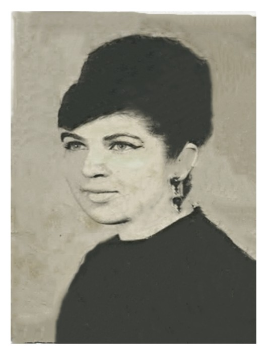
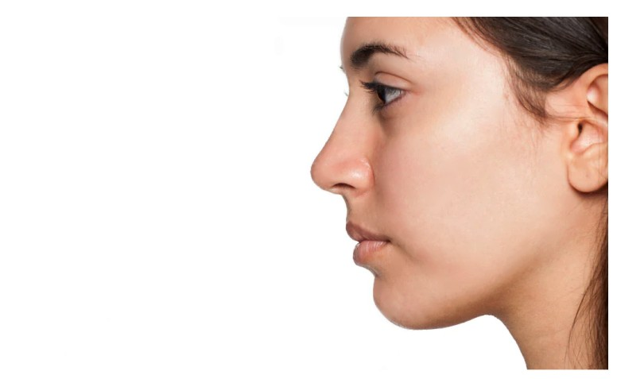
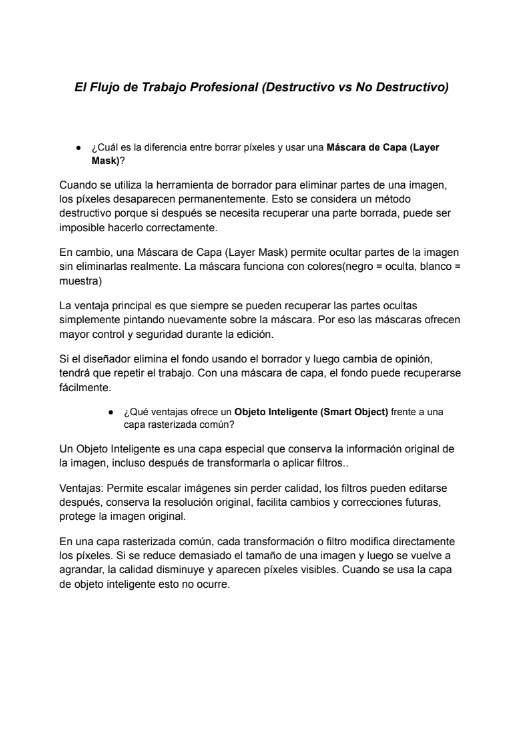

Conociendo Photoshop
La actividad tuvo como propósito investigar la historia y evolución de Photoshop, así como conocer sus principales funciones y aplicaciones en diferentes áreas profesionales. Durante el desarrollo de la actividad se analizaron los orígenes del software, sus creadores y los cambios que ha experimentado desde su lanzamiento hasta convertirse en una de las herramientas de edición de imágenes más utilizadas en el mundo. Además, se identificaron algunas de las áreas donde se emplea Photoshop, como la fotografía, el diseño gráfico, el diseño web, el arte digital y la moda. Finalmente, se recopilaron ejemplos visuales que muestran algunas de las posibilidades creativas que ofrece este programa. Gracias a esta actividad se fortalecieron los conocimientos sobre la importancia de Photoshop en la creación y edición de contenido digital.

Restauración de fotografía
La actividad tuvo como propósito aplicar las herramientas de edición de Adobe Photoshop para corregir las imperfecciones presentes en una fotografía. Durante el desarrollo de la práctica se utilizaron diversas herramientas de retoque para mejorar la apariencia de la imagen, eliminando detalles no deseados y ajustando aspectos como el color, la iluminación y la nitidez. Asimismo, se pusieron en práctica los conocimientos adquiridos en el video de apoyo para lograr una edición más profesional y natural. Gracias a esta actividad se fortalecieron las habilidades en el uso de Photoshop y se comprendió la importancia del retoque fotográfico en la mejora de imágenes digitales.

Aplicar color a Fotos Antiguas
La actividad tuvo como propósito aprender a colorear una imagen en blanco y negro utilizando Adobe Photoshop. Durante el desarrollo de la práctica se trabajó con capas de ajuste, máscaras de capa y modos de fusión para aplicar colores de manera controlada y realista. Además, se verificó que la imagen estuviera en modo RGB para permitir la aplicación correcta de los colores. Gracias a esta actividad se fortalecieron las habilidades en el manejo de herramientas de edición no destructiva y en la creación de imágenes digitales con una apariencia más atractiva y profesional.

Retoque de Piel
La actividad tuvo como propósito aprender técnicas de retoque fotográfico para mejorar la apariencia de la piel sin perder su textura natural. Durante la práctica se trabajó de forma no destructiva mediante la duplicación de la capa original y se utilizaron herramientas como el Pincel Corrector Puntual, la herramienta Parche y el Tapón de Clonar para eliminar imperfecciones como acné, manchas y cicatrices. Además, se ajustó la opacidad de la capa retocada para obtener un resultado más realista y natural. Gracias a esta actividad se fortalecieron las habilidades de edición y retoque profesional en Adobe Photoshop.
Estilización de Figura
No lo hice.


El Arte del Retoque Fotográfico y la Ética Visual
La actividad tuvo como propósito investigar las principales técnicas de retoque fotográfico utilizadas en Adobe Photoshop y reflexionar sobre las implicaciones éticas de la manipulación digital en la actualidad. Durante la investigación se analizaron herramientas de corrección y clonación, así como la técnica de Separación de Frecuencias empleada en el retoque profesional de piel. Además, se examinó un caso real de controversia relacionado con el uso excesivo de Photoshop en medios de comunicación y publicidad. Como parte de la actividad, se elaboró un video en formato vertical donde se presentó la información investigada, se explicaron algunas técnicas de edición y se compartió una reflexión personal sobre los límites éticos que deben considerarse al modificar imágenes de personas. Gracias a esta actividad se fortalecieron los conocimientos sobre el retoque digital y su impacto en la percepción de la realidad y los estándares de belleza.


El Flujo de Trabajo Profesional
La actividad tuvo como propósito comprender la importancia de utilizar métodos de trabajo no destructivos en Adobe Photoshop para mantener los proyectos editables y profesionales. Durante la investigación se analizaron conceptos como las máscaras de capa, los objetos inteligentes y las capas de ajuste, identificando sus ventajas frente a los métodos destructivos que modifican permanentemente la imagen. Además, se elaboró un video tutorial donde se comparó una técnica incorrecta con una alternativa profesional, mostrando cómo preservar los píxeles originales y facilitar futuras modificaciones. Gracias a esta actividad se fortalecieron los conocimientos sobre el flujo de trabajo profesional y la importancia de conservar la flexibilidad durante el proceso de edición.
Fotocomposición y Modos de Fusión
No lo hice.

Collage Surrealista
La actividad tuvo como propósito aplicar técnicas de selección, recorte y composición digital en Adobe Photoshop para crear un collage que representara la personalidad, intereses y gustos del alumno. Durante la práctica se realizó el recorte preciso de una fotografía personal utilizando herramientas de selección avanzada y posteriormente se integró en una composición creativa acompañada de imágenes, texturas, colores y elementos relacionados con los hobbies e intereses personales. Además, se utilizaron modos de fusión, ajustes de opacidad, efectos de papel rasgado y tipografías para lograr una composición visual atractiva y equilibrada. Gracias a esta actividad se fortalecieron las habilidades de edición digital, composición gráfica y expresión creativa mediante el uso de herramientas profesionales de Photoshop.

Fotomontaje
La actividad tuvo como propósito aplicar técnicas avanzadas de fotomontaje en Adobe Photoshop para integrar de manera realista un retrato personal dentro de un entorno fantástico o surrealista. Durante la práctica se utilizaron herramientas de selección y máscaras de capa para realizar recortes precisos, así como modos de fusión y capas de ajuste para igualar la iluminación, el color y la atmósfera entre los diferentes elementos de la composición. Además, se trabajó en la creación de sombras y efectos ambientales para mejorar la sensación de profundidad y realismo. Gracias a esta actividad se fortalecieron las habilidades de composición digital, integración visual y edición no destructiva, logrando una imagen creativa y coherente.